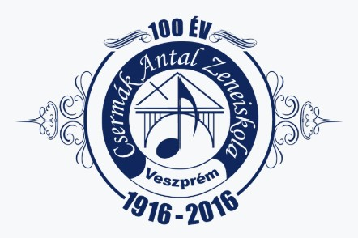

XIII. Kerületi Fischer Annie Zeneiskola
Dominika 2023-ban kezdte meg pedagógiai munkásságát az intézményben. Már a kezdetekkor gördülékenyen
és magas szintű szakmai felkészültséggel vette át a billentyűs tanszak feladatait. Növendékeivel és
szüleikkel egyaránt harmonikusan, jó kapcsolatot ápolva, eredményesen zajlik az oktatás. Növendékei
számos alkalommal szerepeltek a zeneiskola, valamint külsős koncerteken, rendezvényeken, ezáltal
öregbítve iskolánk jó hírét. Ambíciózus, céltudatos, pozitív személyisége miatt az intézmény színes
egyénisége.
Kovács Kira
Igazgató
Fischer Annie Zeneiskola
Csermák Antal Alapfokú Művészeti Iskola

Borsos Dominika – A Harmonika Mestere és Inspiráló Pedagógus
Szeretettel ajánlom figyelmükbe Borsos Dominika harmonikaművészt és pedagógust, akinek neve garancia
a zenei kiválóságra és az elhivatott tanításra. Dominika nem csupán elismert harmonikaművész, hanem
a Czermák Antal Alalpfokú Művészeti Iskola zongora- és harmonikatanára is, ahol nap mint nap átadja
tudását és szeretetét a zene iránt növendékeinek.
Dominika művészi pályafutása során bebizonyította, hogy a harmonika sokoldalú és kifejező hangszer,
amely képes a legkülönfélébb zenei műfajokban is megállni a helyét. Játékát precizitás,
érzelemgazdagság és virtuóz technika jellemzi. Előadásain keresztül nemcsak a harmonika hangjában
rejlő szépséget mutatja be, hanem a zene egyetemes erejét is közvetíti a közönség felé.
Pedagógusként Borsos Dominika kiemelkedő elhivatottsággal és türelemmel fordul diákjaihoz. Képes
felismerni minden növendék egyéni képességeit és motivációit, így személyre szabottan, de mégis
következetesen segíti őket a fejlődésben. Zongora- és harmonikaórái inspirálóak és eredményesek,
célja, hogy a diákok ne csak technikailag fejlődjenek, hanem valóban megszeressék a zenélést, és
megtalálják benne saját hangjukat.
Akár egy felejthetetlen zenei élményre vágyik, akár egy elhivatott és hozzáértő tanárt keres
gyermeke számára, Borsos Dominika kiváló választás. Művészi teljesítménye és pedagógiai munkája
egyaránt garancia a minőségre és a zene iránti elkötelezettségre.
Uher Bertalan
Igazgató
Csermák Antal AMI